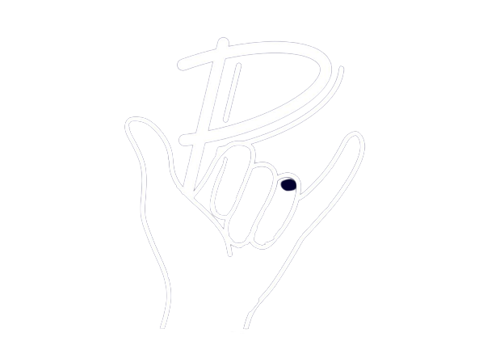

Particly

What is Particly?
So Particly wasn`t actually an idea from me, but from one of my friends. But at the moment me and 4 others are working on it
Generally it can be said that Particly is an app for planing your
parties. But i is also way more than that. You
will also be able to promote your party,
find other partys, chat with your friends, or share photos with everybod else.
Which technologies are we using?
Well if you talk about technologies you got to talk about frontend. We decided to just stick to the basic and us simple web technologies, since we didnt want to learn a completly new framework, before starting. We decided to stick to web technolgies, since writing multiple apps for diffrent OSs, didnt sit right with us.
Writing in HTML CCS JS, we are able to
compile for apple, andriod and all other OSs, using CapacitorJS.
When will it be
We think the beta could be rolled out in sommer.